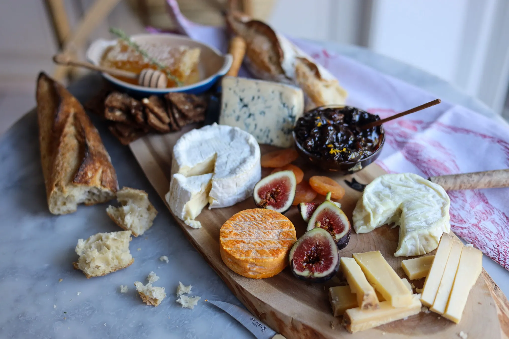

France produces 1,500 different cheeses.

France's love for food is well known whats even more well know is their love for cheese.
France produces around 1,500 different types of cheese each year and is one of the largest
producers and consumers in the world producing around 1.9 million tons each year. Many of
frances foods include cheese and cheese is a staple food for most French. For example in my time
in france cheese was always an appetizer before the main meal. Its needless to say that France loves
food (and cheeses!) and their culture produces some of the best food in the world. On average there are
two books a day being produced on French cuisine.